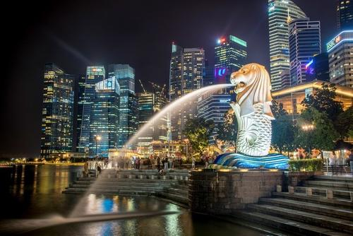
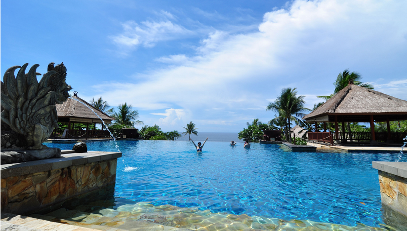

魅力东南亚十日游 |
|
|  | Day01-Day02 新加坡鱼 尾狮公园的新居以水为主题，配上灯光效果，营造出鱼尾狮浮立在碧波之上的生动 壮观的 视觉效果。四周空地可供各种户外表演所用。不远处还有浮动舞台，可以随着潮汐变化而升降。 |
| Day03-Day04 巴厘岛 万种风情，景物甚为绮丽，它还享有多种别称，如“神明之岛”、 “恶魔之岛”、“罗曼斯岛”、“绮丽之岛”、“天堂之岛”、“魔幻之岛”、“花之岛”等， 其著名景点有海神庙，圣泉庙，金银岛... |
 |
 |
Day05-Day06 吴哥窟 又称吴哥寺，位于柬埔寨，被称作柬埔寨国宝，是世界上 最大的庙宇类建筑，同时也是世界上最早 的高棉式建筑。1992年联合国教科文组织将吴哥古迹列入世界文化遗产。 此后吴哥窟作为吴哥古迹的 重中之重，成为了柬埔寨一张亮丽的旅游名片。 |
| Day07-Day08 柬埔寨金边 王宫是一组金色屋顶、黄墙环绕的建筑，包括曾查雅殿、金殿、银殿、舞乐殿、宝物殿等大小 宫殿二十多座，回廊上是仿吴哥寺的浮雕。曾查雅殿雕梁画栋，琉璃瓦顶，同左侧金光闪烁的波列 莫罗科特佛塔相呼应，景色壮观。金殿内有宝物殿，专门陈列珍宝。 |
 |
 |
Day09-Day10 普吉岛 是泰国最大的岛屿，大部分游客都聚集在芭东海滩或普吉镇上，这是整个普吉岛的两个中心。 一个胜在海岛风光，一个胜在古老的建筑，却都因为有完善的各项服务而得到游客们的青睐。 |